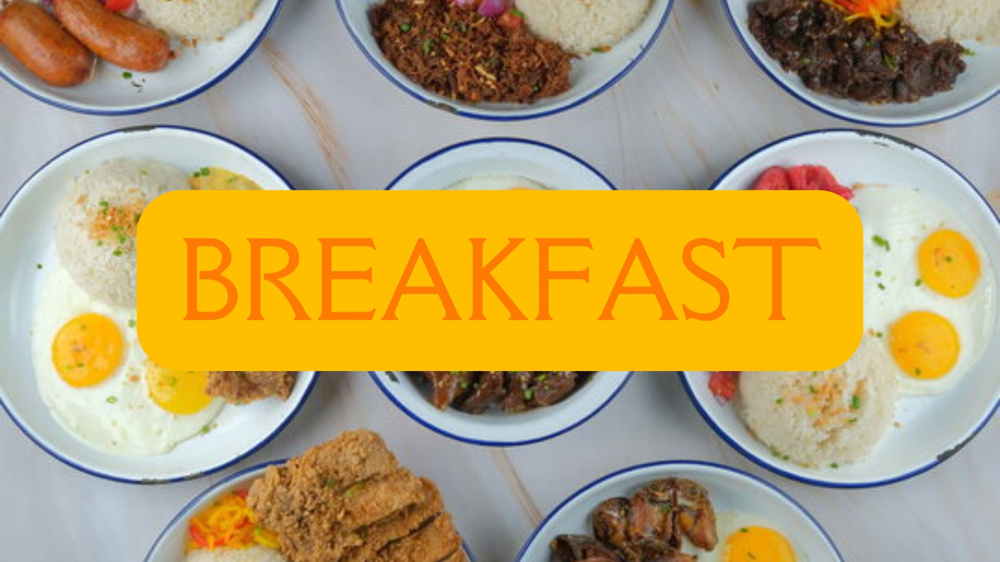
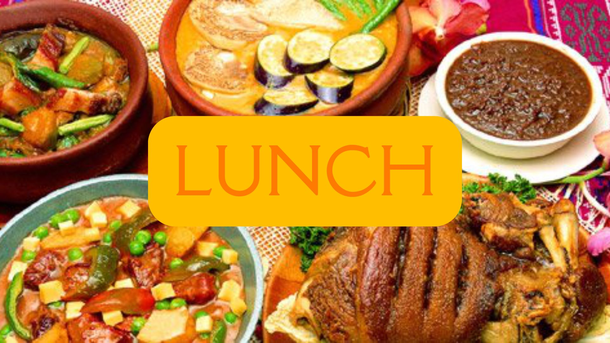
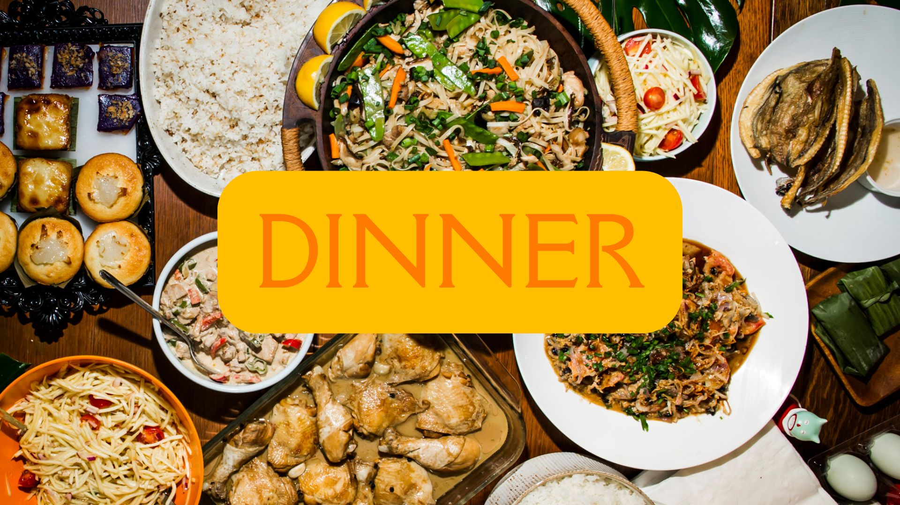
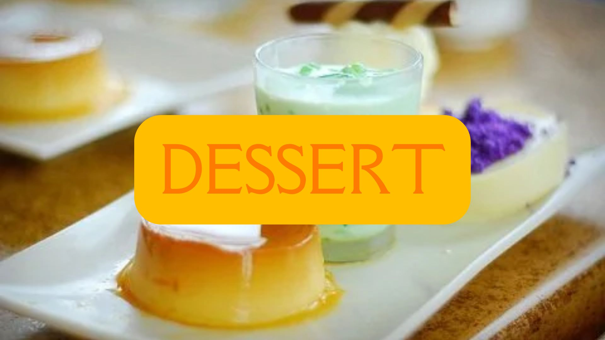

PINOY BREAKFAST
As everyone always says, "breakfast is the most important meal of the day." In the Philippines, breakfast dishes will always be paired with rice. Fried rice, garlic rice, rosemary rice, or just plain rice --- the day will never be complete without it. Go to the BREAKFAST tab to know more about well-known Pinoy dishes you can cook for breakfast!

PINOY LUNCH
Lunch is the middle meal of a fantastic day. In the Philippines, a normal Pinoy lunch may vary depending on one's social class and/or resources. Some may opt to cook rice and a supporting dish with it, while others may avoid rice and save it for the last meal of the day. Regardless, a balanced diet of vegetables, meat, and fish will always appear in a Pinoy lunch. Go to the LUNCH tab to know more about well-known Pinoy dishes you can cook for lunch!

PINOY DINNER
As the sun sets, the children come home from school, the adults from work, and farmers begin to store away their tools to prepare for the night. After a long day of work, everyone should be able to come home and eat a delicious meal! Dinner is just as important as breakfast. You don't want to go to bed, only to toss around all night, unable to sleep because of your empty stomach, do you? Go to the DINNER tab to know more about well-known Pinoy dishes you can cook for dinner!

PINOY DESSERTS
Now, this may be optional, but who would opt out for dessert? Pinoy desserts --- although very similar with Spanish desserts due to our past with them --- are one of the most delicious things ever! Quick to make desserts, creamy desserts, and even odd combinations. Go to the DESSERT tab to know more about well-known Pinoy dishes you can bake/air-fry/mix for dessert!